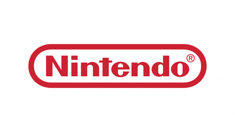

Nintendo
A Nintendo foi fundada no dia 23 de setembro de 1889 em Quioto, Japão, pelo artesão Fusajiro Yamauchi, originalmente sob o nome de Nintendo Koppai. O termo "Koppai" está associado com "cartas", porém não é clara a etimologia do termo "Nintendo"; é geralmente considerado que é uma palavra composta cujo significado é "deixar a sorte para o céu" ou "deixar a sorte nas mãos do destino", aludindo à proibição de jogos no Japão, porém também existe a hipótese de que seus kanjis signifiquem "jogos de azar".

O ramo original da empresa era a produção e comercialização de hanafudas, tradicional jogo de cartas japonês cuja principal característica é a incorporação de ilustrações em vez de números. Isto permitiu que a Nintendo entrasse no mercado, apesar de jogos de apostas terem sido proibidos no Japão em 1633. Essas cartas eram feitas com cascas de amoreiras e cuidadosamente pintadas à mão. Yamauchi começou trabalhando sozinho, porém a alta demanda fez com que contratasse assistentes para produzir em série.
A Nintendo continuou nesse ramo por mais de meio século, no caminho passando por períodos de sucesso e dificuldade, começando a se aventurar em novos negócios a partir da década de 1960. A empresa finalmente entrou no mercado de jogos eletrônicos em 1977 com o lançamento do console Color TV-Game.
Seu console seguinte foi o Nintendo Entertainment System, lançado em 1983 no Japão e dois anos depois no resto do mundo. Ele foi um enorme sucesso comercial e popularizou várias franquias da empresa, como Donkey Kong, Super Mario, The Legend of Zelda e Metroid. Ele foi sucedido por outros consoles de sucesso, como Super Nintendo Entertainment System e a linha Game Boy, que reafirmaram a dominância da Nintendo no mercado.
Consoles
NES

Game Boy/Advance

Super Nintendo

Nintendo 64

Nintendo GameCube

Nintendo DS
Nintendo 3DS

Nintendo Wii/Wii u